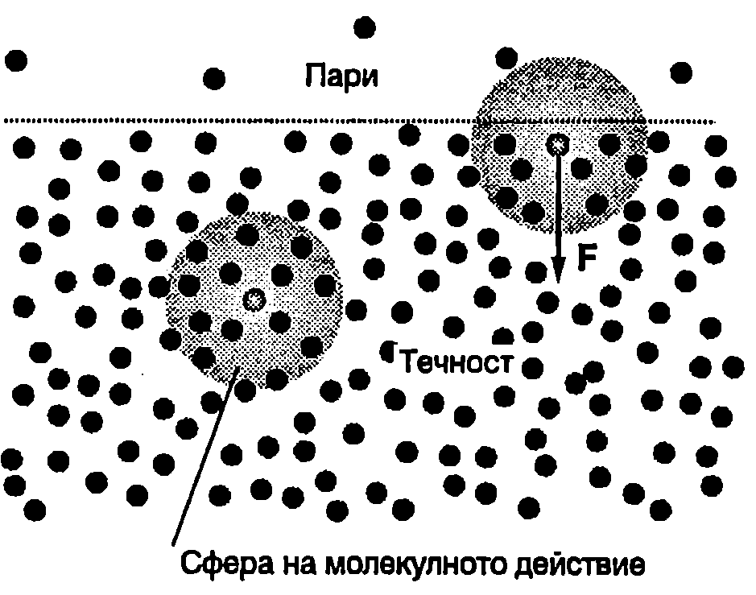
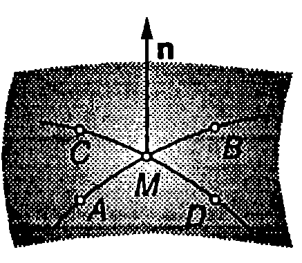
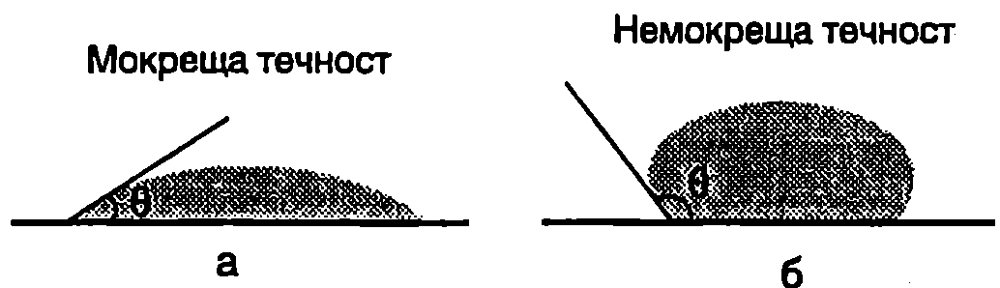
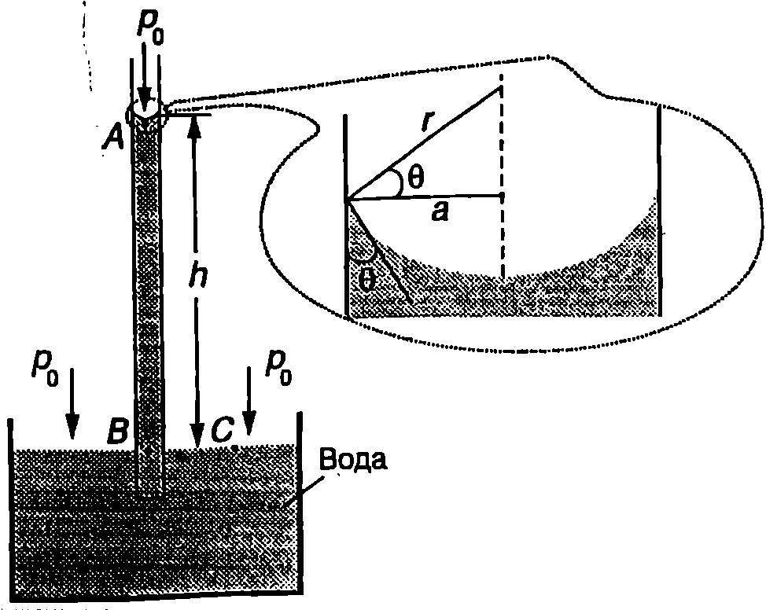
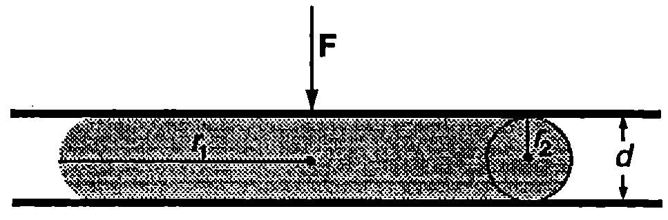

Свободна повърхност
Молекулите на течностите са разположени много по-близо една до друга, отколкото при газовете, затова силите на привличане между тях играят съществена роля. Тъй като силите на привличане много бързо намаляват с разстоянието, взаимодействието между отдалечени молекули може да се пренебрегне. Приема се, че дадена молекула взаимодейства само с молекулите, намиращи се в сфера с център в избраната молекула и радиус , наречен радиус на молекулното действие. Големината на радиуса на молекулното действие е от порядъка на няколко ефективни диаметъра на молекулата. Когато една молекула се намира в обема на течността, разпределението на нейните съседи вътре в сферата на молекулно действие е равномерно (Фиг. \ref{fig:43.1}). Затова резултантната сила, която действа на разглежданата молекула, е нула. Ситуацията се изменя, ако молекулата се намира в повърхностния слой на течността с дебелина . Тогава броят на молекулите в долната част от сферата е по-голям и резултантната сила е насочена надолу, перпендикулярно на свободната повърхност. Следователно молекулите от повърхностния слой са подложени на действието на сили, насочени навътре към обема на течността. За да преминат молекули от обема на течността в повърхностния слой, трябва да се извърши работа за преодоляване на тези сили, при което кинетичната енергия на молекулите намалява и се превръща в потенциална енергия. Тази допълнителна потенциална енергия на молекулите от повърхностния слой на течностите е част от вътрешната енергия на течността. Повърхността на течностите има точно определена форма. Тя наподобява опъната еластична ципа, която се стреми да се свие, т.е. да достигне състояние с минимална потенциална енергия. В отсъствие на външни сили течностите приемат сферична форма, на която отговаря минимална свободна повърхност (минимална потенциална енергия). Когато течността се намира в полето на силата на тежестта, нейната форма се определя от изискването за минимум на сумата от потенциалната енергия на свободната повърхност и гравитационната потенциална енергия.
\begin{figure}[h!] \centering  \caption{} \label{fig:43.1} \end{figure}
Коефициент на повърхностно напрежение
Работата, необходима за създаване на единица свободна повърхност на течността чрез равновесен изотермен процес, без да се изменя обемът, се нарича коефициент на повърхностно напрежение в или за по-кратко повърхностно напрежение. От определението следва, че
където е работата, която трябва да извършат външните сили, за безкрайно малко увеличение на свободната повърхност на течността.
От формула \eqref{eq:43.1} се вижда, че единицата за повърхностно напрежение е J/m или N/m. Повърхностното напрежение зависи от вида на течността, от наличието на примеси, от температурата и др. В табл.43.1 са дадени коефициентите на повърхностно напрежение за някои вещества в течно състояние при различни температури.
Изискването за минимум на потенциалната енергия на свободната повърхност е причина химическият състав на повърхностния слой на разтворите да се различава от този в обема на течността. Действително, минимум на потенциалната енергия може да се достигне не само чрез намаляване на свободната повърхност, но и посредством включване в повърхностния слой на такива молекули, които осигуряват минимална стойност на повърхностното напрежение с. Вещества, чието адсорбиране в повърхностния слой на течностите води до намаляване на повърхностното напрежение, се наричат повърхностно активни вещества. Примери за повърхностно активни вещества са сапунът и различните перилни препарати, които намаляват повърхностното напрежение на водата около 1,5 пъти.
\begin{figure}[h!]
\centering
 \caption{}
\label{fig:43.2}
\end{figure}
\caption{}
\label{fig:43.2}
\end{figure}
\begin{table} \centering \begin{tabular}{ccc} Течност& Повърхностно напрежение 6, N/m& Температура °C\ Етилов алкохол& 2,23.& 20\ Глицерин& 6,31.& 20\ Вода& 7,56.& 0\ & 7,28.& 20\ & 6,62.& 60\ & 5,89.& 100\ Живак& 0,465& 20\ Сребро& 0,80& 970\ Злато& 1,0& 1070\ \end{tabular} \caption{Коефициенти на повърхностно напрежение за някои течности, които са в контакт с въздуха.} \label{table:43.1} \end{table}
Формула на Лаплас
Да разгледаме сферична капка течност с радиус . Нейната повърхност, подобно на разтегната еластична ципа, се стреми да се свие и оказва допълнително налягане върху обема на течността (Фиг. \ref{fig:43.2}а). Ще допуснем (мислено), че можем да увеличим радиуса на капката с . За целта трябва да се преодолеят силите на натиск, предизвикани от това налягане, т.е. да се извърши работа
\begin{figure}[h!] \centering  \caption{} \label{fig:43.3} \end{figure}
за създаване на допълнителна свободна повърхност . От определението за повърхностно напрежение следва, че откъдето за допълнителното налягане се получава
При изпъкнала повърхност силите на повърхностно напрежение се стремят да свият течността и затова налягането под повърхността е , т.е. то е по-голямо от външното налягане (Фиг. \ref{fig:43.2}б). Обратно, при вдлъбната повърхност силите на повърхностно напрежение се стремят да разтегнат течността и нейното налягане е , т.е. налягането под повърхността на течността е по-малко от външното налягане (Фиг. \ref{fig:43.2}в).
Френският математик и физик Пиер Симон Лаплас (1749-1827) обобщава формула \eqref{eq:43.2} за допълнителното налягане под изкривената повърхност на течност за случая, когато повърхността има произволна форма. Нека е точка от повърхността, а — единичният вектор на нормалата към повърхността, прекарана през тази точка. Прекарваме през нормалата две взаимно перпендикулярни равнини, чиито пресечници с повърхността са кривите и (Фиг. \ref{fig:43.3}). Да означим с и радиусите на кривините на двете криви в пресечната им точка . В диференциалната геометрия се доказва (теорема на Ойлер), че сумата от реципрочните стойности на радиусите на кривините е еднаква за всички двойки криви, получени по описания начин. Тази сума се нарича средна кривина на повърхността в точка . Лаплас доказва, че допълнителното налягане под изкривена свободна повърхност на течност е правопропорционално на средната кривина на повърхността
Формула \eqref{eq:43.2} за допълнителното налягане под сферична повърхност на течност се получава от формулата на Лаплас \eqref{eq:43.3}, след като се положи .
Мокрене
Потенциалната енергия на повърхностния слой и коефициентът на повърхностно напрежение зависят не само от вида на течността, но и от средата, с която тя е в контакт - газ, друга течност или твърдо тяло. Всяка гранична повърхност притежава потенциална енергия и се характеризира с определен коефициент на повърхностно напрежение. Да разгледаме капка течност, поставена върху хоризонтална твърда повърхност. В случая има три гранични повърхности: твърдо тяло-течност, течност-въздух и твърдо тяло-въздух. Условието за механично равновесие на системата е сумата от потенциалната енергия на граничните повърхности и гравитационната потенциална енергия на течността да е минимална. Това условие определя и формата на капката течност. Ъгълът между допирателната към повърхността на твърдото тяло и допирателната към повърхността на течността, отчитан навътре към течността, се нарича ъгъл на мокрене (Фиг. \ref{fig:43.4}). Когато (Фиг. \ref{fig:43.4}a), течността се нарича мокреща. При мокренето е пълно. В този случай е енергетически по-изгодно да съществува граничната повърхност твърдо тяло течност, тъй като тя има най-малка потенциална енергия. Затова течността неограничено се разтича по твърдото тяло, стремейки се да покрие максимална площ.
При ъгли на мокрене (Фиг. \ref{fig:43.4}б) течността се нарича немокреща. В този случай граничната повърхност твърдо тяло-течност притежава най-голяма потенциална енергия и системата се стреми да намали тази повърхност. При пълно немокрене () граничната повърхност се свива в точка и течността се отделя от твърдото тяло.
Немокренето води до някои странни на пръв поглед явления. Например намазани с мазнина игла или бръснарско ножче се задържат на повърхността на водата, тъй като поради немокренето пълното им потапяне във водата е свързано с увеличаване на повърхностната енергия, което не се компенсира от намаляването на потенциалната енергия . По същата причина насекомите могат да се движат по водната повърхност без да потъват.
Капилярни явления
\begin{figure}[h!] \centering  \caption{} \label{fig:43.4} \end{figure}
Изменението на равнището на течности в тесни тръбички или цепнатини, предизвикано от повърхностното напрежение, се нарича капилярност. В по-широк смисъл капилярните явления включват всички ефекти, свързани със съществуването на повърхностно напрежение. Да разгледаме широк съд с течност, в който е потопена тясна тръбичка (капилярка) с радиус , която се мокри от течността. Ще използваме формулата на Лаплас, за да определим височината , на която се издига течността в капилярката (Фиг. \ref{fig:43.5}). Тъй като течността е мокреща (ъгълът на мокрене е ), свободната и повърхност е вдлъбната и в точка (Фиг. \ref{fig:43.5}), разположена непосредствено под повърхността, налягането е по-малко от външното атмосферно налягане . Налягането е , където допълнителното налягане се определя по формулата на Лаплас. Съгласно със закона на Паскал налягането се предава равномерно в обема на течността и налягането в точка в (Фиг. \ref{fig:43.5}) е , където е хидростатичното налягане на стълба течност в капилярката. При определянето на хидростатичното налягане не е отчетено закривяването на свободната повърхност, тъй като . В точка , която се намира непосредствено под плоската повърхност на течността, налягането е равно на външното налягане (допълнително налягане се създава само под изкривена повърхност). Тъй като точките и лежат на една и съща хоризонтална равнина, условието за механично равновесие изисква налягането в тези точки да е еднакво, т.е. , откъдето следва, че
\begin{figure}[h!] \centering  \caption{Мокрещите течности се издигат по капилярните тръбички.} \label{fig:43.5} \end{figure}
\begin{figure}[h!]
\centering
 \caption{В капилярката равнището на немокрещата течност е по-ниско, отколкото в широкия съд.}
\label{fig:43.6}
\end{figure}
Огънатата повърхност (менискът) на течността може да се разглежда като част от сферична повърхност с радиус (Фиг. \ref{fig:43.5}). Тогава от формула \eqref{eq:43.2} за допълнителното налягане получаваме
\caption{В капилярката равнището на немокрещата течност е по-ниско, отколкото в широкия съд.}
\label{fig:43.6}
\end{figure}
Огънатата повърхност (менискът) на течността може да се разглежда като част от сферична повърхност с радиус (Фиг. \ref{fig:43.5}). Тогава от формула \eqref{eq:43.2} за допълнителното налягане получаваме
Приравняваме десните страни на равенства \eqref{eq:43.4} и \eqref{eq:43.5} и определяме височина , на която се издига мокреща течност в капилярка с радиус
Когато течността е немокреща (например живак), менискът е изпъкнал (cost < 0) и височината е отрицателна, т.е. равнището на течността в капилярката е по-ниско от това в широкия съд (Фиг. \ref{fig:43.6}). От формула \eqref{eq:43.6} се вижда, че колкото по-малък е радиусът а на капилярката, толкова по-голяма е стойността на .
Пример 43.1
Соковете на дърветата, които съдържат главно вода, се изкачват от корените до листата по мрежа от капилярки, чиито среден радиус е mm. На каква височина може да се издигне водата в такава капилярка, поради капилярния ефект?
Плътността на водата е , коефициентът на повърхностно напрежение е = 0,073 N/m. Мокренето да се приеме за пълно (). \end{psexample}
Решение
Търсената височина определяме с помощта на формула \eqref{eq:43.6}, където полагаме (за )
Полученият резултат показва, че капилярността не може да е основният фактор, който определя движението на соковете към листата на дърветата, тъй като височината на отделни видове дървета достига десетки метри. Изследванията показват, че вероятно причината е в силите на сцепление между молекулите на течностите течностите оказват съпротивление на опитите да бъдат разкъсани. За еднородни течности силите на сцепление достигат няколко нютона на квадратен милиметър. Да разгледаме тясна тръбичка от дървесната тъкан, която изцяло е запълнена с течност, достигаща до листата. В листата водата се изпарява. Силите на сцепление не позволяват да се разкъса стълбът течност и го изтеглят нагоре, така че да се запълни мястото на изпарената вода. Силите на сцепление са толкова големи, че могат да издигнат воден стълб с височина десетки, дори стотици метри.
Пример 43.2
Между две хоризонтално разположени стъклени пластинки е поставена капка живак с обем . С каква сила трябва да се притискат една към друга пластинките, за да се установи между тях разстояние ? Немокренето да се смята за пълно. Коефициентът на повърхностно напрежение на живака е N/m. \end{psexample}
Решение
Свободната повърхност на живака, която не е в контакт с двете пластинки, е изкривена. Тя се характеризира с два радиуса на кривината (Фиг. \ref{fig:43.7}): и . Тъй като немокренето е пълно (), . Допълнителното налягане под изкривената повърхност на живака се определя по формулата на Лаплас \eqref{eq:43.3} където сме отчели, че . От закона на Паскал следва, че налягането е еднакво в целия обем на течността (в случая хидростатичното налягане е пренебрежимо малко). Следователно налягането което създават силите на натиск, с които пластинките действат на плоските повърхности на живака, трябва да е равно на допълнителното налягане под изкривената повърхност. Приравняваме десните страни на уравненията за и и определяме силата
\begin{figure}[h!] \centering  \caption{} \label{fig:43.7} \end{figure} Задачи
- Определете с колко паскала налягането на въздуха в сапунено мехурче с радиус mm е по-голямо от външното атмосферно налягане. Коефициентът на повърхностно напрежение на сапунената вода в 0,045 N/m.
Указание. Не забравяйте, че сапунената ципа има две свободни повърхности!
-
Определете налягането в мехурче въздух с радиус m, което се намира на дълбочина m под повърхността на езеро. Плътността на водата е , коефициентът на повърхностно напрежение е N/m. Атмосферното налягане е Pa.
-
Както е известно от хидростатиката, равнището на еднородна течност в скачени съдове е еднакво. Капилярните ефекти обаче могат да доведат до това, че равнищата на течността при механично равновесие да са различни. Определете разликата във височините на стълбовете живак в две свързани вертикални капилярки с радиуси и . Живакът има плътност , коефициент на повърхностно напрежение N/m и ъгъл на мокрене .
-
От вертикална тръбичка с вътрешен радиус mm на капки изтича спирт. За колко секунди ще изтече 2 g спирт, ако капките се откъсват през интервал от една секунда? Диаметърът на шийката на капката в момента на нейното откъсване да се приеме за равен на вътрешния диаметър на тръбичката. Коефициентът на повърхностно напрежение на спирта е N/m.
Указание. Върху сечението на шийката на капката действат две сили: теглото на капката и силата на натиск , породена от допълнителното налягане под изкривената повърхност на течността. Приемете, че . Капката се откъсва при .
- Две вертикални, успоредни една на друга стъклени пластинки, са потопени във вода. Дължината на пластинките е cm, а разстоянието между тях е mm. Определете:
а) Височината , на която ще се издигне водата между пластинките.
б) Големината на силата , с която пластинките се привличат една към друга.
Плътността на водата е , коефициентът на повърхностно напрежение в N/m. Мокренето да се приеме за пълно.
Указание. Свободната повърхност на водата между двете пластинки има цилиндрична форма. Използвайте формулата на Лаплас, като положите и .